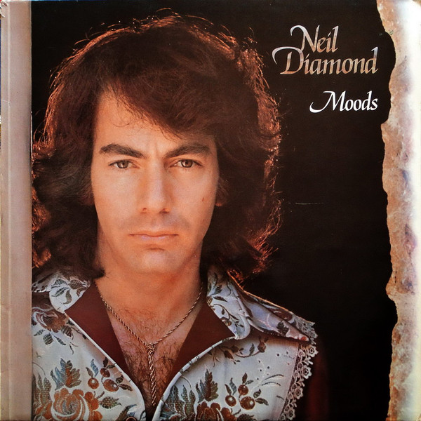

LP
Moods
Neil Diamond
Media: Near Mint (NM or M-) · Sleeve: Near Mint (NM or M-)
CA$13.50
Discogs SuggestedCA$14.89
Discogs MedianCA$14.89
Discogs HighCA$14.89
- Physical Copy ID
- BB-LP-087
- Year
- 1972
- Label
- UNI Records, UNI Records
- Catalog #
- 6369 618, MAPS 6097
- Country
- DEGermany
- Genre / Style
- Rock · Pop Rock